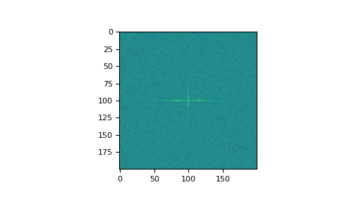

numpy.fft.fftn¶
-
numpy.fft.fftn(a, s=None, axes=None, norm=None)[source]¶ Compute the N-dimensional discrete Fourier Transform.
This function computes the N-dimensional discrete Fourier Transform over any number of axes in an M-dimensional array by means of the Fast Fourier Transform (FFT).
- Parameters
- aarray_like
Input array, can be complex.
- ssequence of ints, optional
Shape (length of each transformed axis) of the output (
s[0]refers to axis 0,s[1]to axis 1, etc.). This corresponds tonforfft(x, n). Along any axis, if the given shape is smaller than that of the input, the input is cropped. If it is larger, the input is padded with zeros. if s is not given, the shape of the input along the axes specified by axes is used.- axessequence of ints, optional
Axes over which to compute the FFT. If not given, the last
len(s)axes are used, or all axes if s is also not specified. Repeated indices in axes means that the transform over that axis is performed multiple times.- norm{None, “ortho”}, optional
New in version 1.10.0.
Normalization mode (see
numpy.fft). Default is None.
- Returns
- outcomplex ndarray
The truncated or zero-padded input, transformed along the axes indicated by axes, or by a combination of s and a, as explained in the parameters section above.
- Raises
- ValueError
If s and axes have different length.
- IndexError
If an element of axes is larger than than the number of axes of a.
See also
numpy.fftOverall view of discrete Fourier transforms, with definitions and conventions used.
ifftnThe inverse of
fftn, the inverse n-dimensional FFT.fftThe one-dimensional FFT, with definitions and conventions used.
rfftnThe n-dimensional FFT of real input.
fft2The two-dimensional FFT.
fftshiftShifts zero-frequency terms to centre of array
Notes
The output, analogously to
fft, contains the term for zero frequency in the low-order corner of all axes, the positive frequency terms in the first half of all axes, the term for the Nyquist frequency in the middle of all axes and the negative frequency terms in the second half of all axes, in order of decreasingly negative frequency.See
numpy.fftfor details, definitions and conventions used.Examples
>>> a = np.mgrid[:3, :3, :3][0] >>> np.fft.fftn(a, axes=(1, 2)) array([[[ 0.+0.j, 0.+0.j, 0.+0.j], # may vary [ 0.+0.j, 0.+0.j, 0.+0.j], [ 0.+0.j, 0.+0.j, 0.+0.j]], [[ 9.+0.j, 0.+0.j, 0.+0.j], [ 0.+0.j, 0.+0.j, 0.+0.j], [ 0.+0.j, 0.+0.j, 0.+0.j]], [[18.+0.j, 0.+0.j, 0.+0.j], [ 0.+0.j, 0.+0.j, 0.+0.j], [ 0.+0.j, 0.+0.j, 0.+0.j]]]) >>> np.fft.fftn(a, (2, 2), axes=(0, 1)) array([[[ 2.+0.j, 2.+0.j, 2.+0.j], # may vary [ 0.+0.j, 0.+0.j, 0.+0.j]], [[-2.+0.j, -2.+0.j, -2.+0.j], [ 0.+0.j, 0.+0.j, 0.+0.j]]])
>>> import matplotlib.pyplot as plt >>> [X, Y] = np.meshgrid(2 * np.pi * np.arange(200) / 12, ... 2 * np.pi * np.arange(200) / 34) >>> S = np.sin(X) + np.cos(Y) + np.random.uniform(0, 1, X.shape) >>> FS = np.fft.fftn(S) >>> plt.imshow(np.log(np.abs(np.fft.fftshift(FS))**2)) <matplotlib.image.AxesImage object at 0x...> >>> plt.show()
